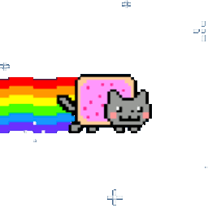

WOLVERINE
Green Mango Tree784 Nostrand Ave
Wolverine likes to hang out in a cardboard box near the door. Peek inside to see if she's sleeping. (Don't wake her up!) If you're lucky, she'll be roaming the bodega aisles awaiting scratches. (She's quite friendly.)

FRANKLIN CAT
Nam's Green Market769 Franklin Ave
Franklin is quite the wild cat - no guarantees you'll find this feline inside - she's often out exploring! If you're lucky enough to cross paths, she likes a good pat on the head.

LAZY CAT
Organic Deli & Grocery Corp
1018 Manhattan Ave
This lazy orange tabby couldn't care less that he may be in your way. He considers the entire bodega his bed. Belly scratches are a must.